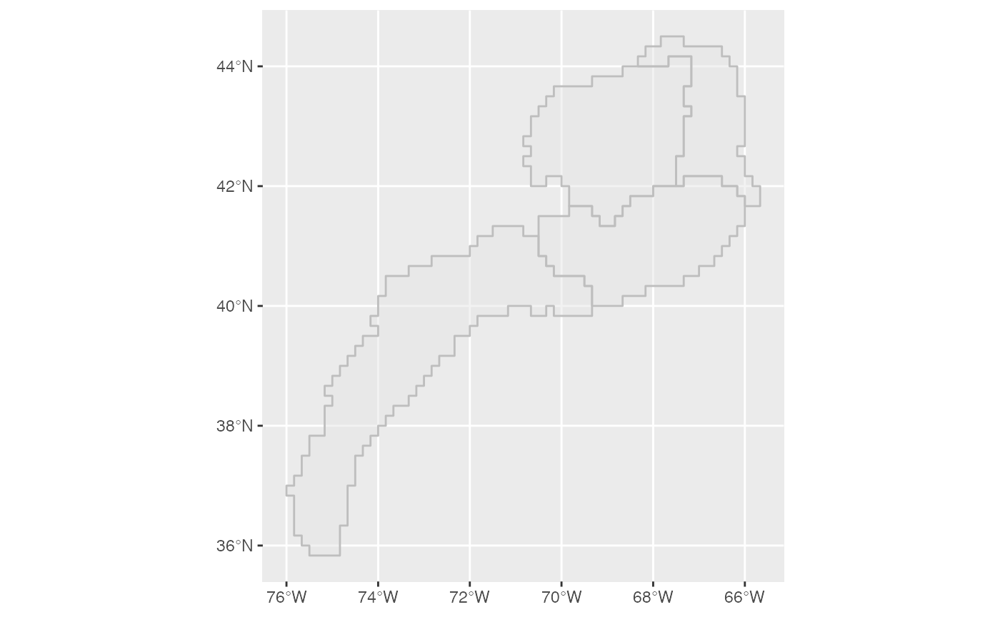

Once you are granted permission to access the database and have Oracle’s instant Client installed you can make a connection as follows:
channel <- dbutils::connect_to_database(server="servername",uid="yourUsername")
channel is an object inherited from the DBIConnection-class. This object is passed as an argument to functions in survdat
Pulling the data takes up to 15 minutes to complete. see get_survdat_data for details. To pull the survey data with conversion corrections applied use the following:
data <- get_survdat_data(channel)To pull biological traits of individual fish sampled on the survey cruise
data <- get_survdat_data(channel, bio=TRUE)data is a list of 2 elements. The data pull and the set of sql statements made to pull the data
Two shape files are included in the package, strata.shp and EPU.shp
To read and plot the EPU.shp file:
areaPolygon <- sf::st_read(dsn = system.file("extdata","EPU.shp",package="survdat"), quiet=T)
plot_shapefile(areaPolygon)
Swept area biomass is estimated for particular regions of interest. These regions are specified via shape files.
All shapefiles are required to be an sf (simple features) object.
calc_swept_area(data$survdat,areaPolygon=areaPolygon,areaDescription="EPU",filterByArea="GB",filterBySeason = "SPRING")
The filterByArea value should be one of the values found in the areaDescription field of the shapefile
calc_swept_area(data$survdat,areaPolygon=areaPolygon,areaDescription="EPU",filterByArea="GB",filterBySeason = "SPRING",tidy=T)
To visualize the overlap of the survey data and the regions, first define a coordinate reference system (crs) in which to project both the points and the shapefile. Convert the LAT and LON coordinates to the WGS84 reference ellipsoid (crs = 4326)
crs <- 4326
points <- sf::st_as_sf(data$survdat,coords=("LON","LAT"), crs=crs)
# plot data with regions
plot_data_area(points=data$survdat,polygons=area,crs)